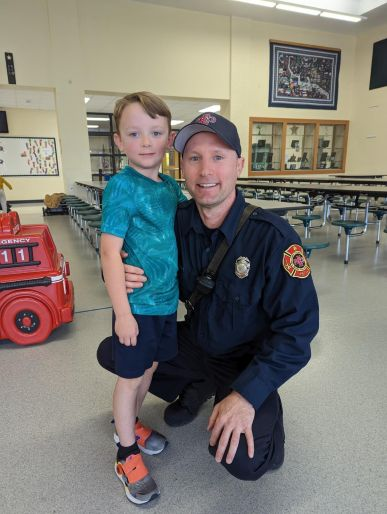

Nick Ledin is a captain with Eau Claire (WI) Fire Department, currently assigned to Truck 8. Ledin has been a student of the job for nearly 20 years and is a contributor to ‘Firefighter Rescue Survey’, was the former president of the Northland FOOLS, and is a board member of FireNuggets. He’s a technical committee member for NFPA 1700, was a former technical panel member for UL FSRI’s PPA/PPV Study, and is a co-host of the FireNuggets Podcast and GRABS Podcast. Nick is also lucky enough to be a small part of UL FSRI’s Public Education Advisory Committee. He can also grow a pretty legit ‘stache. Most importantly, he is a husband to an amazing wife and father to two rad boys.
